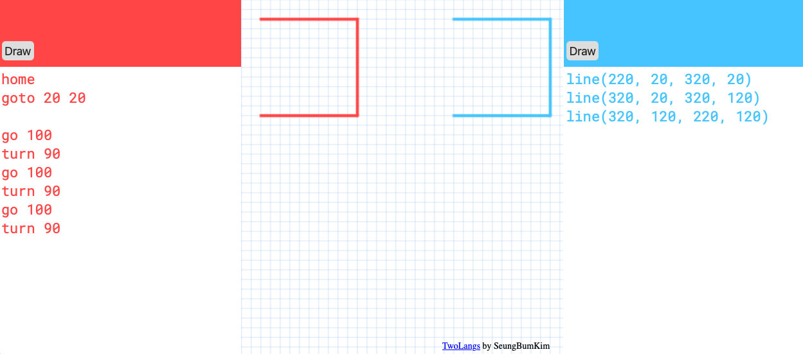

N개의 맥락
- 마지막 수정 : 2026-02-06
- 김승범 (Seungbum Kim), https://metakits.cc
세 개의 의자들
1965년 조셉 코수스(Joseph Kosuth)는 '하나 그리고 세 개의 의자들' 을 발표했다. 기호의 개념을 다루는 작품으로 의자라는 개념을 보여주기 위해 '실물의 의자, 의자 사진, 의자에 대한 사전적 정의'를 한 자리에 두었다.
'하나 그리고 세 개의 의자들', 조셉 코수스, 1965  직관적이고 간단하게 보이는 이 작업은 생각할 거리를 많이 던져준다.
실제로 이 작품은 나의 몇 가지 작업에 큰 영감을 주었다. 관점이 다른 두 코딩언어를 다루는 '다른 언어 드로잉'과 전문가와 비전문가 모두에게 생소한 코딩언어를 도입한 drawForth를 예로 들 수 있다. 특히 drawForth를 사용했던 워크숍의 제목은 '하나, 그리고 세 개의 코드'였다.
직관적이고 간단하게 보이는 이 작업은 생각할 거리를 많이 던져준다.
실제로 이 작품은 나의 몇 가지 작업에 큰 영감을 주었다. 관점이 다른 두 코딩언어를 다루는 '다른 언어 드로잉'과 전문가와 비전문가 모두에게 생소한 코딩언어를 도입한 drawForth를 예로 들 수 있다. 특히 drawForth를 사용했던 워크숍의 제목은 '하나, 그리고 세 개의 코드'였다.
- 다른 언어 드로잉 https://metakits.cc/projects/2langs
- 하나, 그리고 세 개의 코드 https://metakits.cc/projects/1n3-codes/
작품에 대한 작가의 의도, 개념미술에서 이 작품의 위치를 별개로 하더라도, 나는 이 작품을 몇 가지 '개인적인' 방식으로 읽곤한다. 첫째는 어떤 개념에 대해 이해하는 것, 즉 앎을 생각한다. 명제적 지식(사실)과 절차적 지식(기술)으로 나눈 앎이 아닌 점진적으로 확장하는 앎이다. 이 작품을 예로 내가 의자에 대해 안다는 것이 무엇일까 생각해 볼 수 있다. 의자에 앉을 수 있고, 의자라는 다양한 이미지를 떠올리고 구분할 수 있다. 그리고 추상적인 기호로 의자라는 것이 무엇인지 설명할 수도 있다. 실물을 만지고 사용할 때, 이미지를 보며 인식할 때, 사물의 정의를 표현할 수 있을 때 그 각 방식마다 대상에 대한 앎은 늘어난다. 이 정도만 알면 나는 대상을 다 안다고 말할 수 있을까? 싶을 때 실은 항상 앎에 +1 이 되는 과정이 존재한다. 의자의 경우 내가 직접 만들어 본다면 그 이해도는 증가할 것이다.
둘째는 맥락에 대해 떠올린다. 친구들과 모여서 의자에 대해 대화를 한다고 생각해보자. 명확해보이는 이 사물에 대해 이야기하면서 각자가 다른 맥락을 가지기도 한다. 누군가는 실물 의자를, 누군가는 디자인적인 의자의 이미지를, 누군가는 추상적 개념으로의 의자를 말할텐데 서로의 맥락 차이로 대화가 단절이 되기도하고 차이가 있음에도 마치 하나인양 어울릴 때도 있다. 하나의 개념이 한 곳에 정박해 있지 않고, 단순한 개념도 실은 여러 맥락을 둥둥 떠 다니는 게 우리의 일상이다.
맥락
예전에 간단한 기술로 컴퓨팅의 개념을 경험하는 어떤 워크숍을 진행하다가 내가 습관적으로 쓰던 '맥락'이라는 단어에 반응하는 참가자가 있었다. 워크숍을 마치고 회고를 하는 중에 그 참가자는 맥락이라는 단어를 콕 집어 본인이 이 개념과 어떤 씨름을 했는지를 설명하면서 대학원 과정에서 공부하는 중임을 드러냈다. 누군가에게는 이 단어가 학술적으로 보였고, 어떤 점에서는 (지적 매력을 품은) 장식으로 보이기도 했나 보다.
일상생활에서 꽤 쓸법하다고 생각했지만 결코 쉽게 이해되지 않는 단어가 바로 '맥락'이다. 내가 왜 이 단어를 종종 쓰게 되었는지 돌이켜보면 순전히 앨런 케이(Alan C. Kay)의 영향이라 볼 수 있다. 이제야 솔직히 말하면 영웅처럼 쫓던 그의 말에 자주 등장하던 맥락(Context) (2017년 9월의 개인 메모 중) 그 내용 자체는 알고 있었지만, 정확히 공감이 되지 않았다. 해당 예제는 너무 당연해보였다. 이 이야기는 시무어 페퍼트의 Mathland와도 일맥상통하고, 그동안 앨런케이가 말했던 '관점의 변화는 IQ 80의 상승과 맞먹는다'는 표현과도 같은 맥락이었다. 을 나는 그가 진정 어떤 의도로 말한건지 정확히 이해하지 못하면서, 알고 싶었기에 계속 썼던 거 같다. 앨런 케이는 물 속의 물고기를 예로 들며 맥락의 힘을 설명했다.
"땅 위의 물고기도 펄떡거린다. 그러나 만약 물고기가 가장 적합한 환경인 물 속에서 펄떡거리면 그 결과는 질적으로 달라진다." (check:정확한 출처)
행위자로서 행위하는 부분과 그 행위가 일어나는 (그래서 영향을 끼치는) 환경의 관계에 대해 생각해보게 된다. 환경은 결국 맥락을 말한다. '물 만난 물고기'라는 말이 그냥 나온 말이 아닐 것이다.
프로그래밍의 미래
매체 디자이너
매체 디자이너란 말은 없다. 그러나 브렛 빅터를 단순히 UI 디자이너라고 말하기엔 그의 행보를 담아내기 어렵다. 고속으로 발전하는 기술 시대에 자기의 속도로 미래에 대한 걱정과 동적매체 (Dynamic Medium) 를 실험하는 모습은 그의 웹사이트에서 확인할 수 있다. https://worrydream.com/
이자 컴퓨터 과학자인 브렛 빅터(Bret Victor)는 1973년 7월 9일 프로그래밍의 미래(The Future of Programming)라는 제목의 발표를 했다.
오타가 아니다. 브렛 빅터의 농담이다. 실제 발표일은 2013년이었다. https://worrydream.com/dbx/ OHP를 사용해서 발표자료를 보여줬고, 현재가 마치 1973년인양 말하면서 청중의 웃음을 자아냈다. 공기를 바꾸는 오프닝이었고, 일종의 퍼포먼스였다. 그리고 그 행위는 단순히 분위기 환기가 아닌, 맥락을 바꾸는 힘을 가졌다. 현재의 위치에서 과거를 말하는 것은 되돌아보기에 머문다. 회상이다. 그러나 마치 집단 최면을 걸듯 과거를 현재화하면 그 시기의 맥락 속으로 들어가게 된다. 과거의 렌즈로 (과거 입장에선 미래인) 현재를 다시 보게 만들 수 있다.
OHP를 사용해서 발표자료를 보여줬고, 현재가 마치 1973년인양 말하면서 청중의 웃음을 자아냈다. 공기를 바꾸는 오프닝이었고, 일종의 퍼포먼스였다. 그리고 그 행위는 단순히 분위기 환기가 아닌, 맥락을 바꾸는 힘을 가졌다. 현재의 위치에서 과거를 말하는 것은 되돌아보기에 머문다. 회상이다. 그러나 마치 집단 최면을 걸듯 과거를 현재화하면 그 시기의 맥락 속으로 들어가게 된다. 과거의 렌즈로 (과거 입장에선 미래인) 현재를 다시 보게 만들 수 있다.
브렛 빅터가 시대적 맥락을 바꿔가며 발표 속에서 느끼게 하고 싶었던 것은 프로그래밍이란게 대체 뭐고 어떤 모습으로 변화해야할까라는 질문이었다. 그가 1973년의 맥락으로 기대한 미래의 변화는 다음으로 요약된다.
1. coding -> direct manipulation of data
2. procedures -> goals and constraints
3. text dump -> spatial representations
4. sequential -> concurrent
(1973년의 맥락으로 계속 읽어서) 현재 우리에게 익숙한 왼쪽의 구시대적인 방식을 벗어나 새로운 방향으로 미래의 프로그래밍은 바뀌게 될 것이고, 그 근거를 (역시 1973년 기준의) 오늘날의 여러 선구자들의 실험과 시도를 예로 들면서 설명한다. 청중들은 이미 미래를 알고 있었다. 2013년의 우리는 여전히 구시대적인 방식을 고수하며 프로그래밍을 이어가고 있기에 브렛 빅터의 능청스런 발표에 웃기도 했고, 오지 않은 미래를 보고 혼란스럽기도 했다. 10여년이 더 지난 2026년의 우리는 이 변화의 표를 다시 작성할 수도 있다. 예를 들어 coding은 (AI와 함께) chatting이 되는 식으로 말이다. 그런데 이 변화가 점진적인 발전이라기 보다는 '프로그래밍 방식'에 있어서는 최근의 격변이라는 점이 인상적이다. 하지만 질문은 여전히 유효하다. 대체 프로그래밍이란 행위는 무엇이어야할까?
코딩
프로그래밍 대신 코딩이란 단어를 생각해보자. '코딩'은 어떤 맥락에 놓이냐에 따라 여러 의미와 늬앙스를 갖게 된다. 특정 개발자 문화 속에서는 프로그래밍보다 아마추어적인 행위로 평가절하되기도 하고, 컴퓨팅 맥락을 벗어날 때에는 프로그래밍보다 오히려 더 큰 인류 보편적인 행위를 담아내기도 한다. 코딩을 특정 코딩언어를 사용한 컴퓨팅 활동으로 좁히더라도 해당 행위가 어떤 영역에서 어떤 표현물을 만드느냐에 따라 그 의미는 다양한 해석이 가능해진다. 코드에 대한 질문과 대화를 중심으로 풀어낸 <코드 밀 키트>에서 나는 '한입 코드'를 진행했다. 짧은 토막의 코드를 여러 관점으로 읽어보며 해석해보는 활동이었다. https://codemealkit.github.io/posts/program_02bites/ 코딩에 '교육'이란 단어까지 붙여보면 또 어떤가. 교육도 가르치는 자와 배우는 자의 관점에 따라 다시 여러 맥락으로 이야기가 될 수 있고, 앞서 '코딩'의 여러 맥락과 조합이 될 때에는 우리가 탐색할 수 있는 논의의 가짓수는 엄청나게 늘어날 것이다. 여기에 사회적인 힘의 관계까지 끼어들게 된다면? 이 사람의 말과 저 사람의 말이 결국은 서로 다른 맥락에서 펄떡거리게 될 것이다.
나는 여러 코딩교육의 맥락 중 하나로 어떤 활동을 만들었다. 코딩에 대한 대화를 이끌어내기 위해 웹 기반 소프트웨어 키트를 만들고 '다른 언어 드로잉'이라는 이름의 워크숍을 진행했다. 생각하는 방식이 다른 두 개의 코딩언어를 좌우에 배치하고 두 언어를 스스로 관찰하고 사용하여 중앙의 모눈 공간에 그림을 그려보고 경험을 나누는 활동이다.
다른 언어 드로잉의 웹 기반 키트 화면. 형식이 다른 두 언어가 같은 그림을 그리고 있다. https://metakits.cc/2langs/ 에서 실행해 볼 수 있다.

코드를 인간의 자연어와는 다른 기계의 인공언어 정도로 생각하던 사람에게 여러 코드 사이에서도 서로 다른 관점을 가질 수 있다는 것을 직접 코딩하며 느낄 수 있다. 그리고 두 언어로 코딩하며 느껴지는 차이는 단순히 문법의 차이가 아니라 서로 다른 수학적 맥락을 기반으로 만들어졌다는 점,
왼쪽의 언어는 움직이는 객체를 중심에 두고 위치를 생각하는 '극좌표계'를, 오른쪽의 언어는 한 점을 기준점으로 잡고 위치를 생각하는 '직교좌표계'를 사용한다.
그래서 같은 결과물을 그리더라도 사고방식이 다를 수 있음을 깨닫게 된다. 좌표에 대한 다른 사고방식의 언어를 가진 (수학)나라를 경험하는 것이다.
마인드스톰
'수학나라 (Mathland)'는 마인드스톰에서 언급된 개념이다. <마인드스톰 - 어린이, 컴퓨터, 배움 그리고 강력한 아이디어> (시모어 패퍼트 지음) 는 아이들을 위한 컴퓨팅 교육의 고전으로 보통 알려져있다. 하지만 조금 더 들여다보면 이 책은 새로운 사고방식을 매개할 컴퓨팅 기술매체에 대한 인식과 태도에 대해 말하고 있다. '프랑스에 살면서 프랑스어를 배우듯 수학나라에서 수학을 배우는 것'이라고 패퍼트는 말한다. 보통 우리는 형식적이거나 지나치게 수학적인 개념을 어린 아이들이 배우기 어렵다고 생각하지만 이는 해당 개념을 단순하게 만들거나 구체화하는 데 도움이 되는 재료가 부족한 문화적 배경에 살고 있기 때문이라고 설명한다. 수학나라가 환경적인 맥락을 말한다면, 또 다른 표현으로 '생각하게 하는 사물(object-to-think-with)'이 있다. 여기서 말하는 사물은 의외로 별거 아닌 일상의 물건일 수 있지만, 이 사물이 나 자신과 어떤 관계를 형성하느냐에 따라 새로운 사고방식을 열어주는 매개가 된다. 기능적 도구가 아닌 맥락을 만드는 사물이 된다.
마인드스톰의 초판 서문인 '내 어린 시절의 톱니바퀴'는 패퍼트 자신에게 생각하게 하는 사물로 작용한 톱니바퀴 이야기를 담고있다. 당시 어린 남자 아이라면 다수가 접했을 교구인 이렉터 세트(Erector Set)가 유독 그에게만 특별한 사물이 되었던 것은 어떤 이유일까? 패퍼트는 '나는 톱니바퀴와 사람에 푹 빠져 있었다'라고 말한다.
Erector Set 1922
나의 어린 시절에는 '과학상자'가 있었다. 또래 친구들이 다들 사길래 나도 부모님을 졸라서 샀지만 아쉽게도 애착 관계는 생기지 않았다.
어떤 교구가 교육적 효과가 있다고 해서 모두가 같은 경험을 할 수 있는 것이 아니다. 그 사물이 개개인과 이루는 관계, 각자의 맥락은 항상 달라진다. 그리고 그 맥락은 개인적인 애착과 함께 더 강화된다.
관련 이야기를 담은 책으로 셰리 터클(Sherry Turkle)의 <내 인생의 의미 있는 사물들(Evocative Objects: Things We Think with)>이 있다.
패퍼트는 아이들이 자신만의 '생각하게 하는 사물'을 직접 만들고 사랑에 빠지길 바랬다.
메타미디어
자신만의 '생각하게 하는 사물'을 어떻게 만들까? 이를 가능하게 하는 가장 대표적인 매체는 결국 컴퓨터이다. 이 말은 단순히 '컴퓨터가 생각하게 하는 사물이다'가 아니라, 컴퓨팅이 재료가 되어 각자의 맥락을 담아낼 형식(form)을 만들 수 있다는 의미다. 바로 메타미디어(Metamedia)로서의 컴퓨터를 말한다. 컴퓨터를 메타미디어로 사용하고 각자의 형식으로 표현하는 것이 어떤 의미인지는 과거의 시도에서 일부 엿볼 수 있다. 어린 아이를 포함한 비전문가가 자신이 이해할 수 있는 코딩언어를 사용해서 동적인 표현물을 만들었는데, 그림을 그리기 위해 그림판을, 작곡하기 위해 악보를 그리는 소프트웨어를 만드는 식이었다.
Things Kids Do (1975), Xerox PARC, https://www.youtube.com/watch?v=k3QAVEweMkY
Personal Dynamic Media (1977), Alan Kay and Adele Goldberg
진정한 개인의 동적 매체(Personal Dynamic Media)를 꿈꿨던 과거 비전과는 달리 반 세기의 퍼스널 컴퓨터 역사는 정해진 길로만 흘러가진 않았다. 컴퓨터는 결코 단일한 형식의 매체로 존재하지 않았고, 산업 구조의 변화와 사용하고 소비하는 개인에 의해 수많은 경로로 가지를 치고 분화하며 다양한 문화와 맥락을 만들어냈다. 그와 함께 엔드유저 프로그래밍 환경도 끊임없이 연구되었지만 우리 일반 유저가 자신의 손에 '메타미디어'로서의 힘을 충분히 쥐어본 적은 아직 없는 것 같다.
다른 형식이 다른 맥락을 만든다
앞서 브렛 빅터는 <프로그래밍의 미래> 발표에서 우리는 아직 프로그래밍이 무엇인지 잘 모른다고 말했다. 그럼에도 프로그래밍으로 (혹은 코딩으로) 무엇을 해야 할지에 대해서는 상상해 볼 필요가 있다. 컴퓨팅의 메타미디어라는 속성을 내 의도대로 사용하고, 그래서 패퍼트가 말한 '생각하게 하는 사물'을 만들어 개인적인 맥락을 구성하는 일 말이다.
보통 창의성을 기르는 방법을 살펴보면 '관점을 바꾸는 법'을 강조한다. 하지만 단순히 '관점을 바꿔라!'라는 선언만으로는 잘 동작하지는 않는다. 생각하는 틀, 환경이 바뀌어야하는데 여전히 같은 맥락에 머물러 생각하기 때문이다. 맥락이 바뀌는 경험을 하려면 다른 물 안에 있어야 하고, 다른 나라에 살아야 하며, 다른 형식체계 속에 놓여야 한다.
컴퓨팅의 메타미디어라는 속성을 이해하게 되면 도구를 사용하는 방법에서 도구의 형식을 바꾸는 방법으로 관점이 옮겨진다. 지금 쓰고 있는 웹브라우저, 워드프로세서, 사진 편집 도구 등 당연하게 보이는 일상의 디지털 기술 도구에 대해 의문을 가져본 적은 없는가? 왜 이런 모습이어야할까? 왜 이렇게 사용해야할까? 내가 만약 능력이 되어 내가 원하는 방식으로 형식을 바꿀 수 있다면 무엇을 해보겠는가? 음악가가 자신만의 악기를 새로 정의해서 만들고, 소설가가 글쓰기 이전에 문학기계를 먼저 발명해보는 것이다. 오영진은 <AI 문예학: 문학기계의 계보> (2026-01-09) 에서 과거 문학기계의 계보를 훑고, 직접 바이브 코딩한 문학기계를 라이브로 시연하며 발표했다. 다른 형식은 결국 다른 맥락을 만든다. 예를 들어 유명한 고전 게임인 테트리스를 만든다고 생각해보자. 처음에는 고전을 똑같이 만들어 원래 게임이 가진 맥락을 유지할 수 있다. 그런데 게임의 형식을 좀 바꿔보면 어떨까? 만약 테트리스 가로 공간이 엄청 넓어져서 한 층을 채우기도 힘들어진다면? 만약 기존의 5가지 자유 테트로미노가 아닌 내 마음대로 블록을 정의해서 쌓아본다면? 테트리스는 다른 맥락의 게임이 될 것이고 새로운 의미를 찾는 계기가 될 수 있다.
형식을 바꾸는 힘
나는 모두가 코딩하기를 바란다. 여기서 물론 '모두'와 '코딩'은 맥락에 따라 다양한 해석이 가능하겠지만, 어찌 되었든 코딩은 컴퓨팅 객체의 형식을 나의 맥락으로 바꿀 수 있는 유일한 방법이라 생각한다. 누군가의 특정 논리로 설계된 인터페이스를 통해서만 기술매체의 기능에 접근하는 것과 내가 그 속성을 탐색할 방법을 알고 인터페이스와 같은 형식을 바꿀 수 있는 힘을 가질 때의 결과는 질적으로 다르다. 코딩이 매우 강력한 힘인 것을 알지만, 그래서 많은 연구자와 교육자들이 노력했지만, 모두가 코딩하는 것은 실현되기 어려웠다.
일상의 리터러시가 되기엔 발전이 더디던 '모두의 코딩'은 인공지능, 특히 거대언어모델(Large Language Model, LLM)의 발전과 함께 새로운 국면을 맞이하게 되었다. 그 의미도 모호한 바이브 코딩(Vibe Coding)은 컴퓨팅 여러 분야로 퍼져갔고, 누구나 자연어로 쉽게 원하는 디지털 결과물을 만들 수 있게 되었다(고 믿고있다). 이 용어의 시작은 한 사람의 SNS 글이었다. 일부를 인용해보면, 'I call "vibe coding", where you fully give in to the vibes, embrace exponentials, and forget that the code even exists.' https://x.com/karpathy/status/1886192184808149383?s=46 이를 두고 누군가는 이제 우리에게 코딩은 필요가 없다고 말하기까지 한다. 물론 이 말 역시 '코딩'의 여러 맥락에 따라 다양하게 해석이 가능한 부분이다.
지금도 폭발적으로 발전하고 변화하는 분야이기에 어떤 결론을 내릴 수는 없다. 그러나 분명한 점은 그것이 개인으로 하여금 컴퓨팅 객체의 형식을 바꿀 수 있는 쉽지만 강력한 길을 열어주었다는 점이다.
그래서, 그것이 우리의 맥락을 지켜줄 것인가?
인공지능이 우리의 환경을 채우면서 '맥락'이 다시 중요해졌다. 이번엔 인공지능의 맥락이 주로 언급된다. 아직은 연속적으로 학습하지 않는 LLM이 대화의 맥락 안에서 학습하듯 발현되는 결과물에 놀라워하고, 과도한 입력에 맥락이 썩는 것을 걱정하기도 한다. 매번 업데이트되는 새로운 접근법을 쫓다 보면 어느새 내가 무엇을 해야 하는지 변질되거나 변질된 사실조차 잊는다. 강력한 길을 열어주긴 했는데 그 길의 방향에 나 개인의 맥락은 존재하지 않을지도 모른다. 그래서 더더욱, 이 거대한 맥락의 소용돌이 속에서 우리가 놓치지 말아야 할 것은 각자의 맥락을 지키는 지극히 개인적인 감각일 것이다.